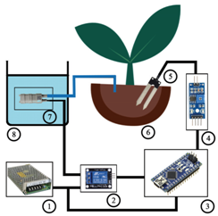
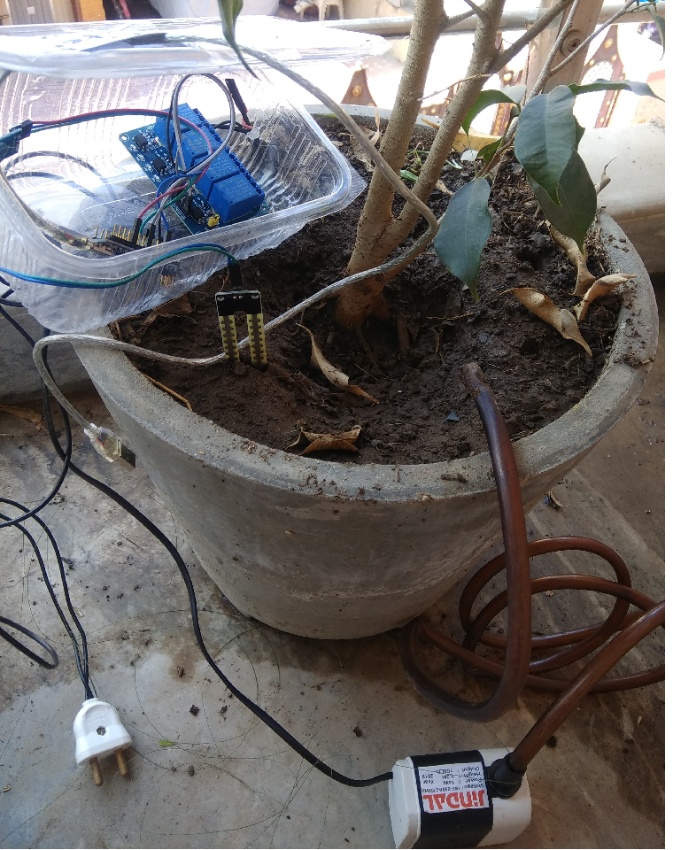
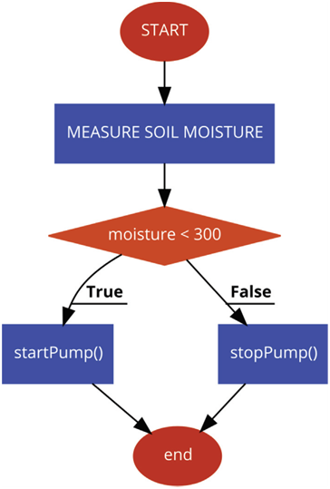

Recent Work
View Our Project




It consumes 40-50% less water as compared to the traditional system.
Ideal growth condition is been improved when small amount of water is been applied over unnecessary large amount of water .
This can be programmed according to the need of plant.
Convenient to use as the sensor will work automatically.
More accurate than manual checking because human error can occur if the operator is too late or too early in making a change of water flow.
Helps to preserve nutrients in the plant.
As it is automatic is saves some amount of time.
Since nowadays, in the age of advanced electronics and technology, the life of human being should be simpler and more convenient, there is a need for many automated systems that are capable of replacing or reducing human effort in their daily activities and jobs. Here we introduce one such system, named as AUTOMATIC PLANT WATERING SYSTEM, which is actually a model of controlling irrigation facilities that uses sensor technology to sense soil moisture with a microcontroller in order to make a smart switching device to help millions of people Can we automatically water our home and garden plants without bothering our neighbors when we decide to go on vacation or somewhere else for a long period.
L.J Group Of Institutes
Mon to Fri 9am to 6 pm
Send us your query anytime!